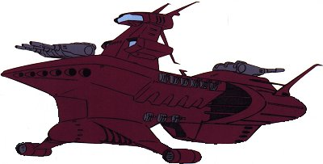

| Chivvay Zeon Space Force Heavy Cruiser |
|
|  | |
General and Technical Data |
|
|
Unit type: space-use heavy cruiser Operator: Zeon Duchy Dimensions: overall length 235 meters; overall width 113.2 meters; overall height 99.4 meters Weight: 37000 tons Construction: High tensile steel Propulsion: 5 x rocket engine Hangar capacity: 1 infantry, 8 MS Launch catapults: 0 Fixed armaments: 1x fore 3-barrel mega particle cannon turret, 1x aft 3-barrel mega particle cannon turret; 18 x 2-barrel antiaircraft machinegun turret; 12 x missile launcher Alternate Colorscheme
Chivvay II Refit  RPG quick stats sheet RPG quick stats sheet
Armor Rating: 3 Speed Rating: .4 Maneuverability Rating: .4 Sensors Rating: 2.2 MPC Power Rating: 3.5
|
| Technical and Historical Notes | |
|
The Chivvay-class is the oldest ship in the Zeon fleet; almost a decade by the time of the One Year War. It was created during the early days of the Duchy of Zeon, and has the most resemblance to a traditional navy ship of any of their vessels. As it was an era well before mobile suits, a hangar had to be added to the bottom of the Chivvay's stern for it to carry Zakus during the Lourm Campaign. Though it is slow and turns poorly, it is heavily armored and sports a lot of firepower compared to the nimble Musai. Also, unlike a Musai, it can trump a Salamis in a close-range broadside attack.
The standard Chivvay is armed with two large, triple-barreled mega particle cannons. A host of antiaircraft guns stipple its midsection, and a set of rocket launchers are mounted along the front of its hull for long-range attacks. In order to continue their useful deployment in the field, a refitted Chivvay class is now beginning production. The new Chivvay sports a dedicated mobile suit hangar (with a catapult) and additional mega particle cannons, though some of its smaller weapons had to be removed to make room for new equipment. Unlike the similarly armed Zanzibar-class, the Chivvay is entirely unable to re-enter the atmosphere, making it a definitive space warship. Due to its low maneuverability, it is usually used it situations where brute force is more necessary than quick tactical movements. Also, it is sometimes used as a command ship among Zeon patrol fleets. |
|